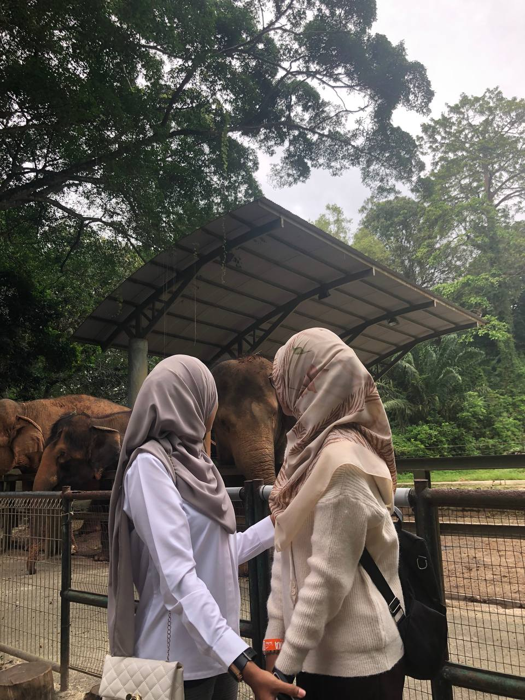
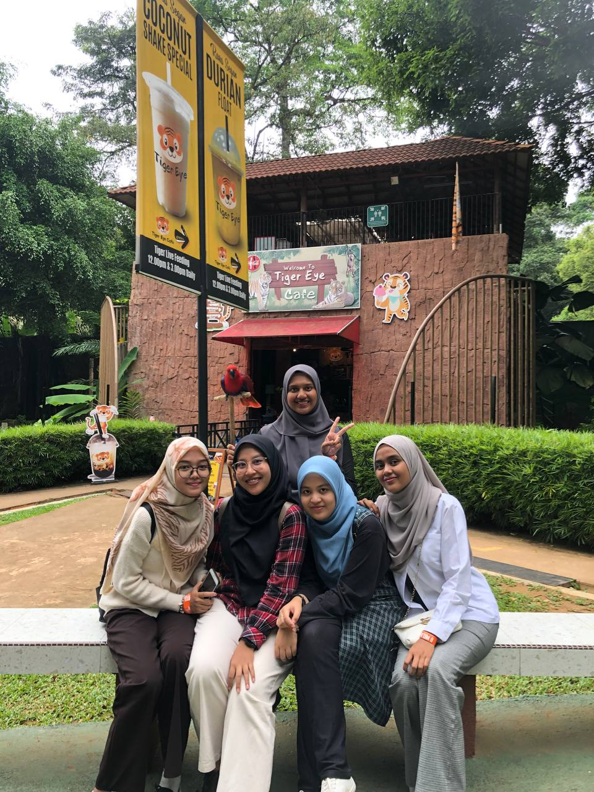
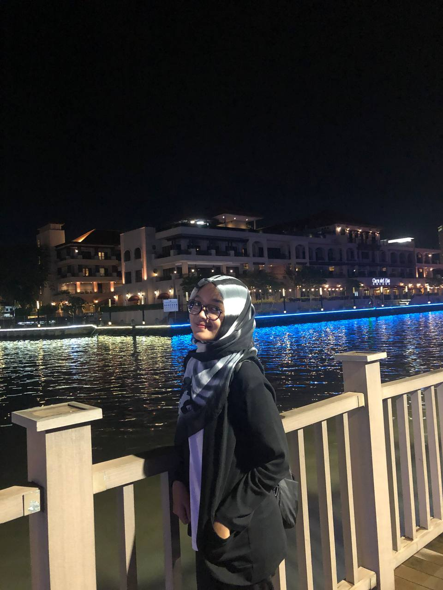
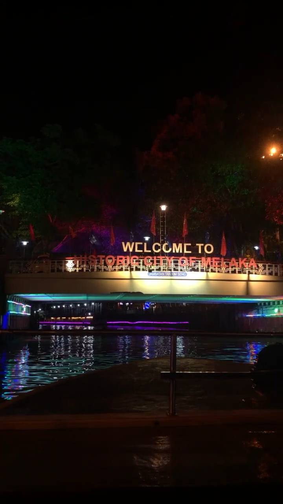
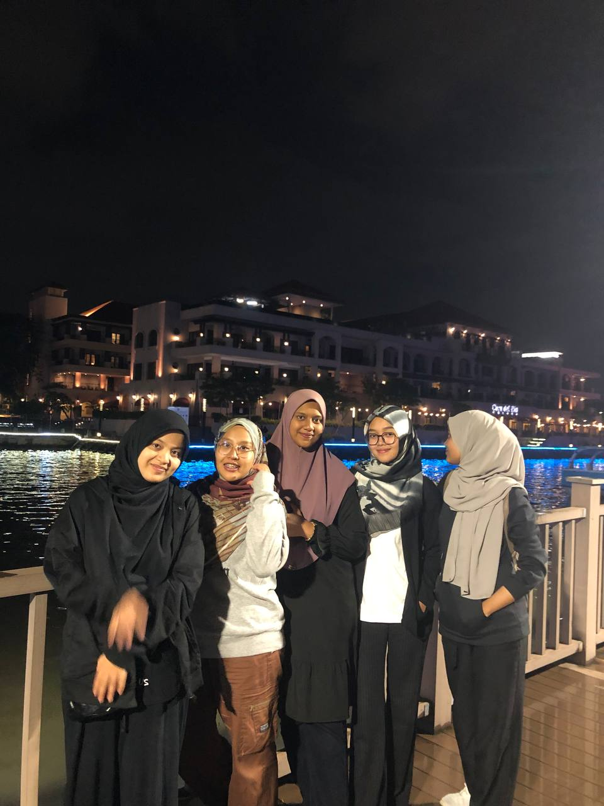
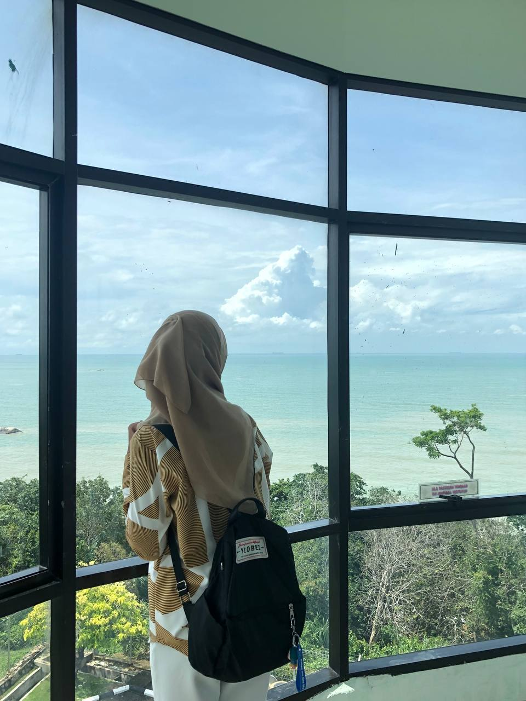
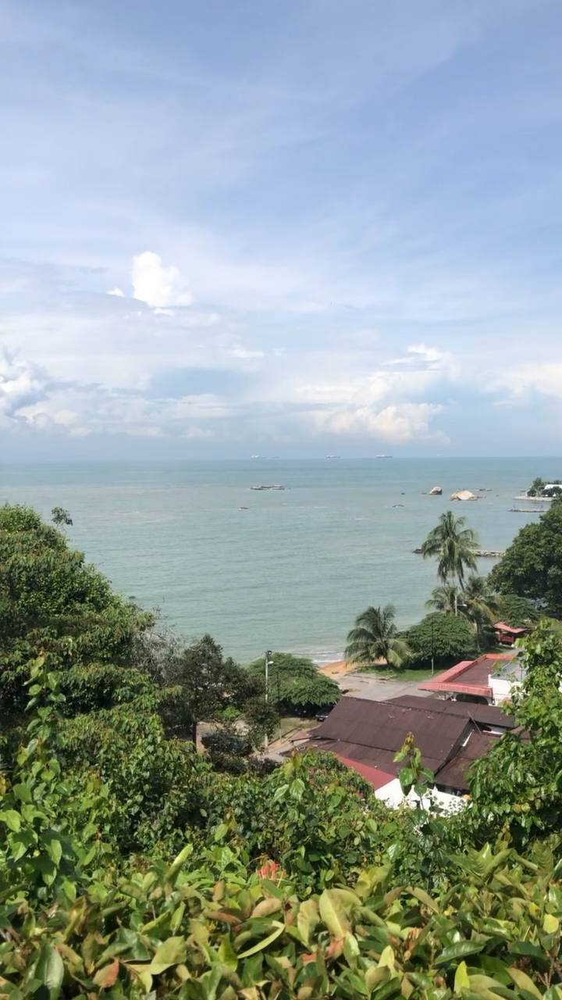
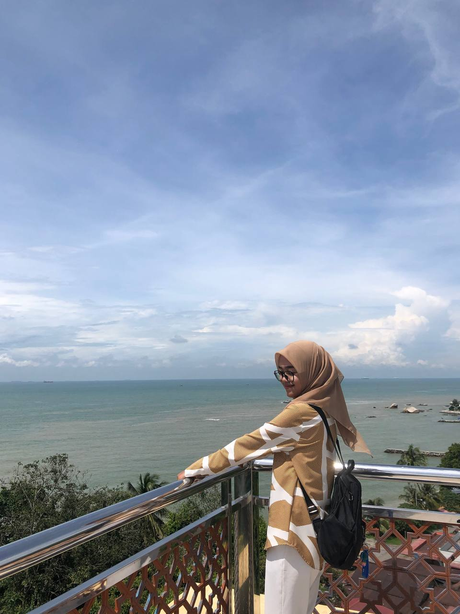

MELAKA
THE FAVORITE HISTORY STATE
1.Melaka Zoo: Exploring Wildlife Diversity in Ayer Keroh
The Melaka Zoo is a symbol of Malaysia's dedication to wildlife conservation and education, and it is located amidst the lush surroundings of Ayer Keroh, Melaka. With acres of natural habitat, this large zoological park gives guests an intimate experience into the fascinating world of animals. The Melaka Zoo entices with its varied habitats, educational exhibits, and conservation activities, featuring both local and exotic fauna.Situated near Ayer Keroh, Melaka, the Melaka Zoo is a shining example of natural diversity, conservation, and education. Families and environment enthusiasts alike adore it for its vast grounds, varied animal exhibits, and dedication to sustainable techniques. The zoo's ongoing evolution and expansion of its conservation initiatives bears witness to Malaysia's commitment to safeguarding its natural heritage and encouraging the next generation to value and conserve the wonders of the animal kingdom.


2.Melaka River Cruise: A Journey Through History and Culture
With its beautiful meandering through the core of Melaka's historic district, the Melaka River Cruise provides a calm and quiet journey that highlights the city's rich history, diverse culture, and stunning architecture. This captivating river trip lets guests fully experience the charm and history of one of Malaysia's most well known locations, all against the backdrop of imposing structures and busy streets.The Melaka River Cruise is a voyage through history, culture, and breathtaking architecture rather than just a simple boat ride. For tourists visiting Melaka's UNESCO listed historic district, it is a must visit site because of its scenic beauty, historical significance, and cultural diversity. Whether sailing during the day or at night, the trip provides an exceptional chance to experience Melaka's charm from a different angle, providing guests with enduring memories of Malaysia's dynamic cultural hub.



3.Selat Melaka: Gateway of Trade and Cultural Exchange
One of the most important maritime routes in the world, the Strait of Malacca, runs between the Indonesian island of Sumatra and the western coast of Peninsular Malaysia. For millennia, Melaka's history, economy, and cultural landscape have been influenced by this vital waterway in Southeast Asia. The Strait of Malacca, also known as Selat Melaka, is a symbol of Malaysia's rich maritime history, thriving economy, and cultural variety. Melaka's history and character have been formed by its strategic importance as a commercial route and cultural crossroads, positioning it as a hub for regional development and global connectedness. Selat Melaka is still a symbol of Malaysia's enduring history and its dedication to safeguarding its nautical heritage for future generations, given its continued significance in Southeast Asia's maritime scene.


